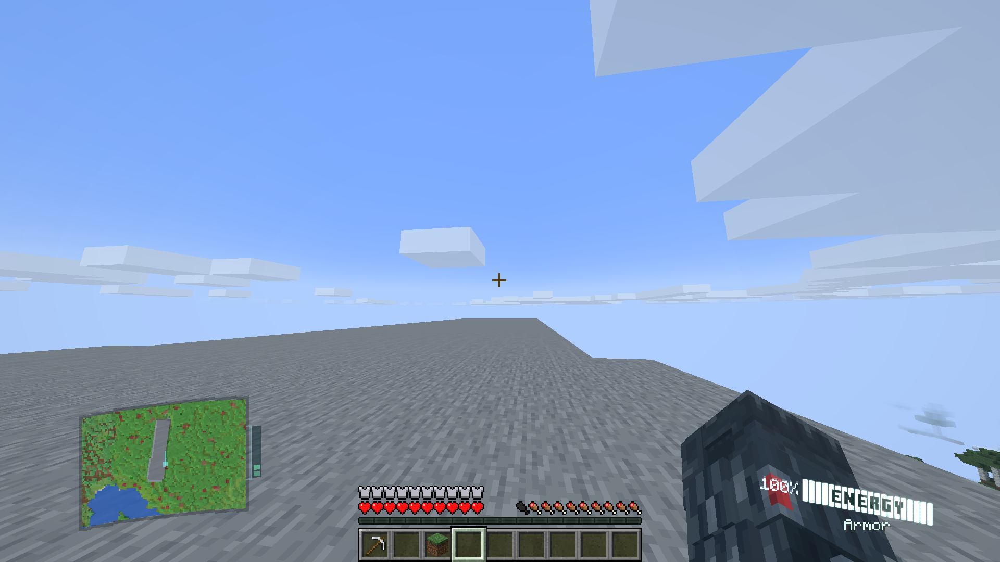
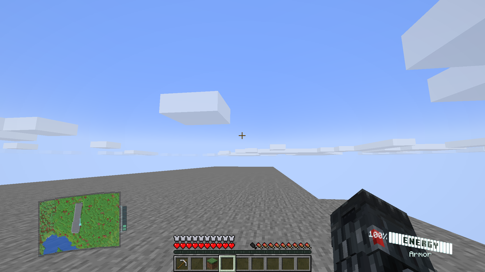
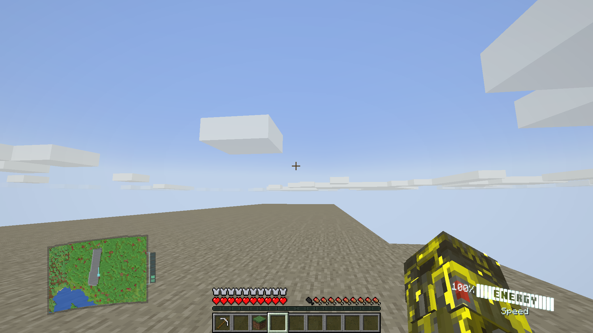
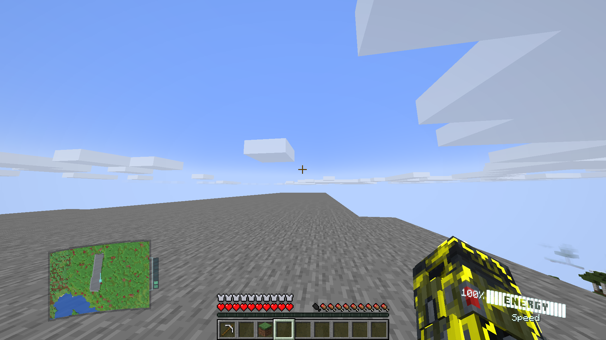
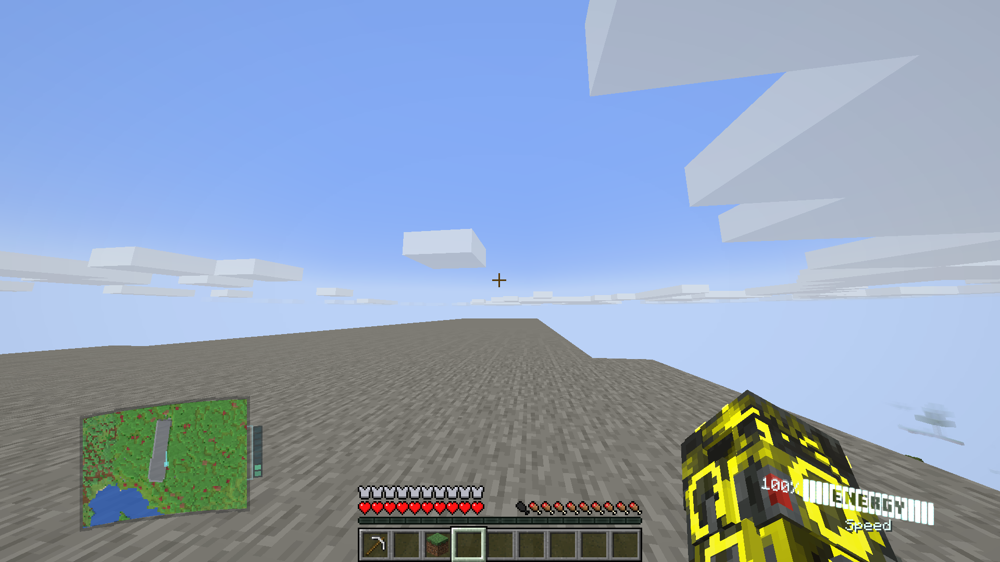
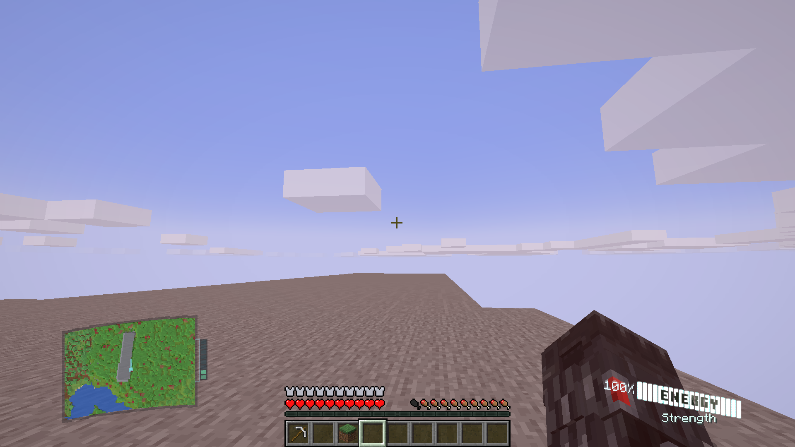
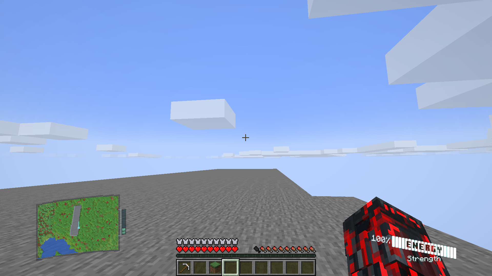
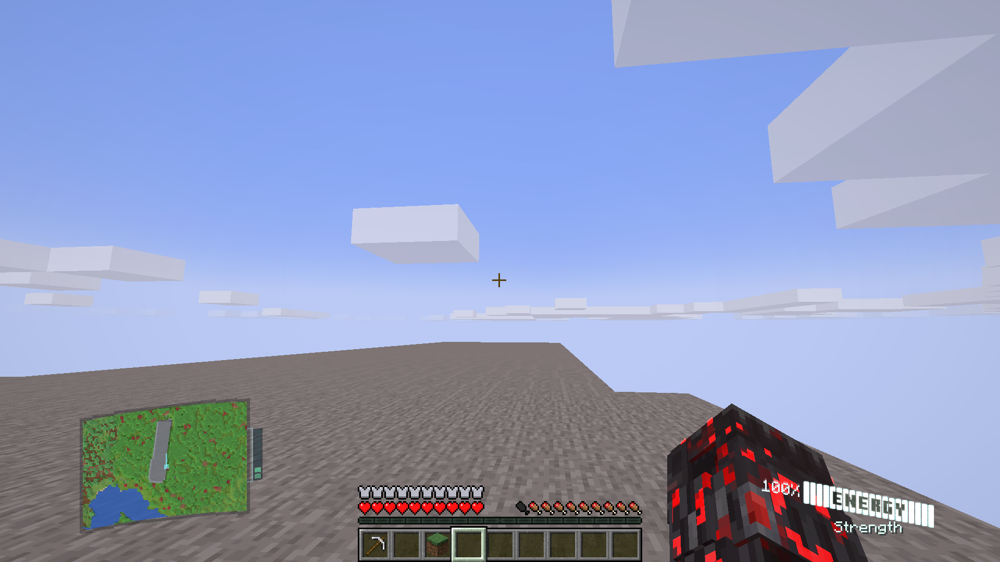
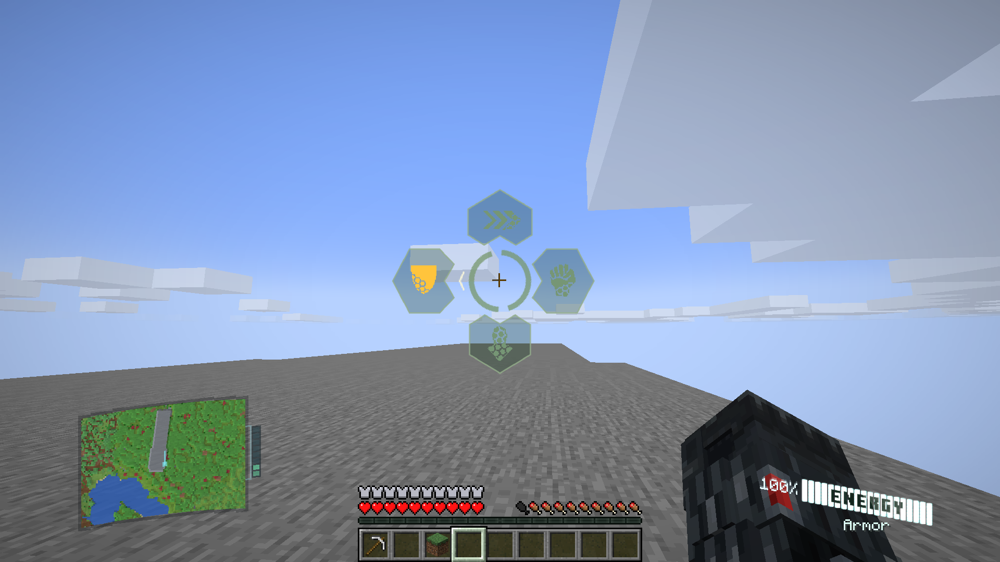
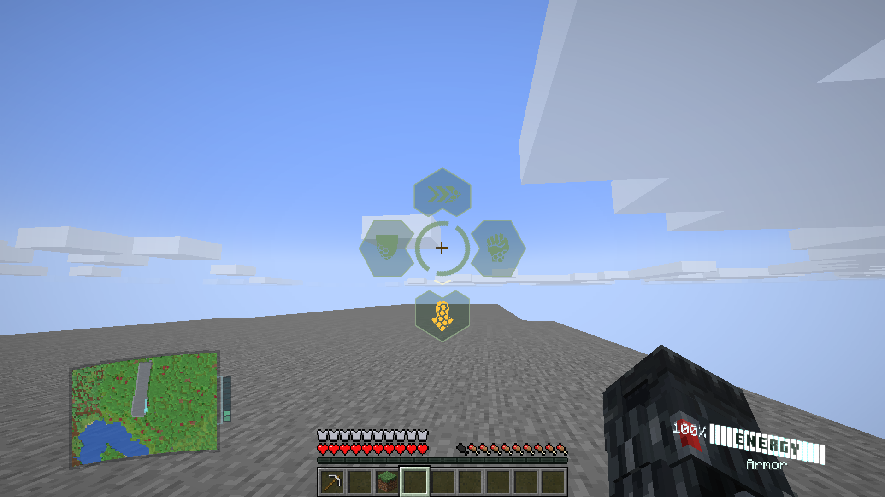
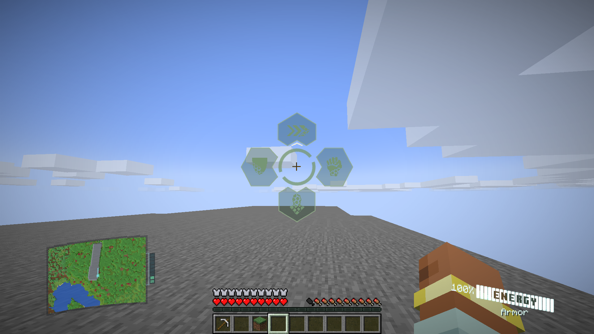
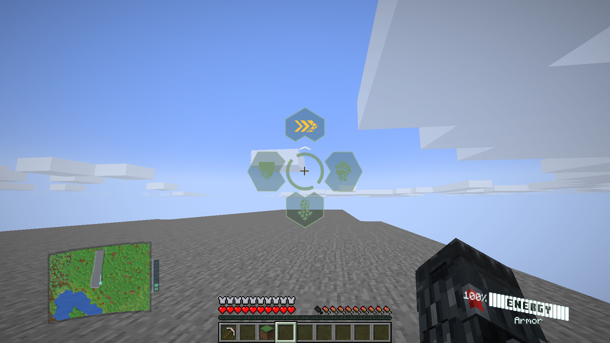
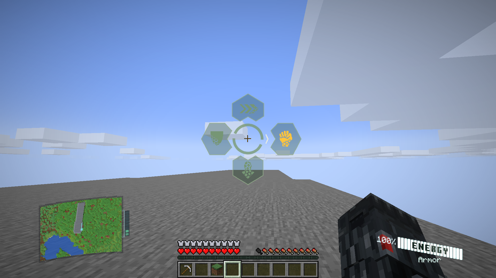
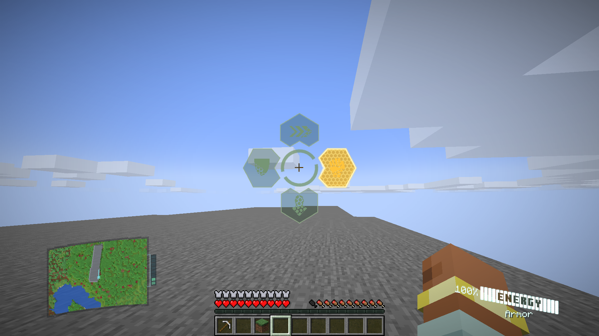
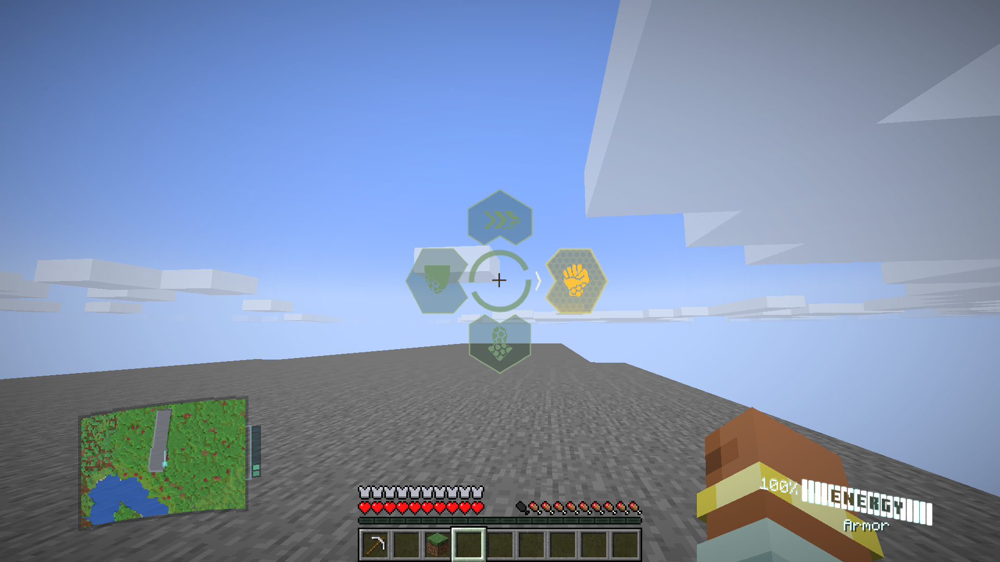
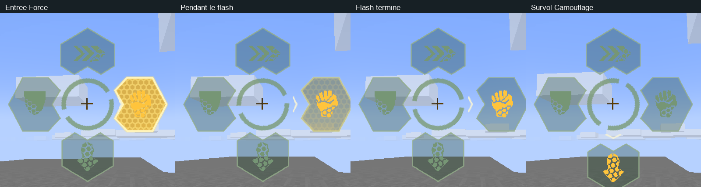
Menu : dessin de production maintenu par une enveloppe de test (le reticule de fond peut rester visible). Flashs de modes et mouvements : vrai controle clavier de la campagne 03. Images originales ; seule la sequence juxtapose des recadrages.















